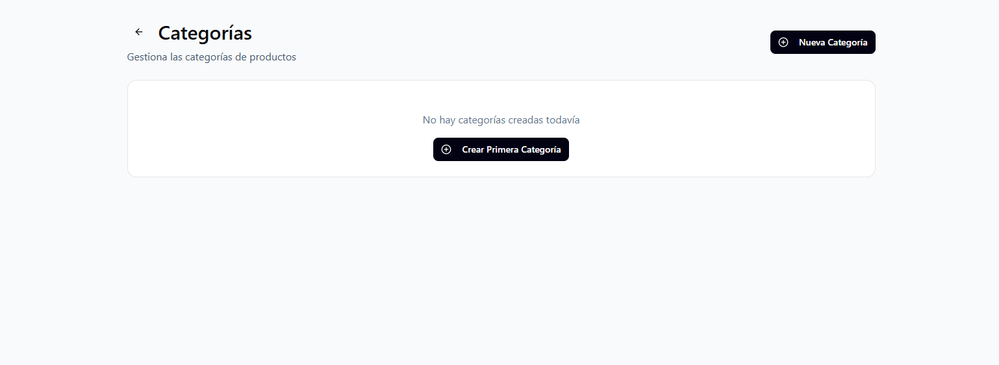
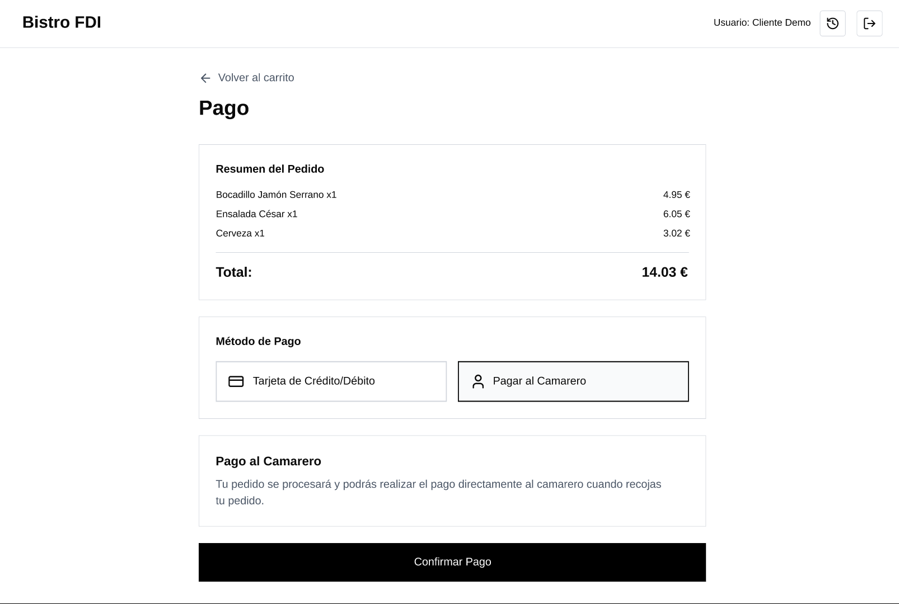
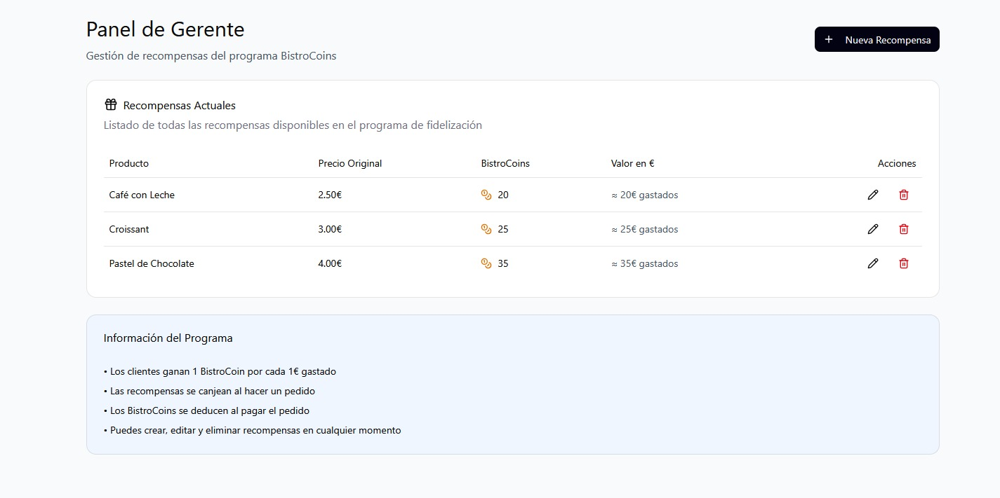
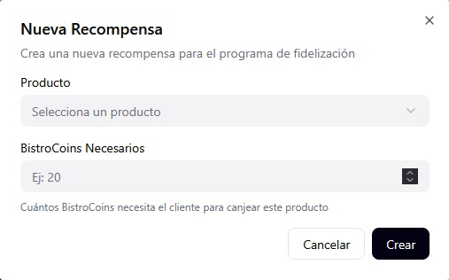
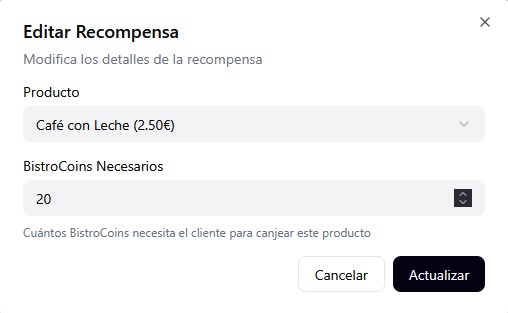
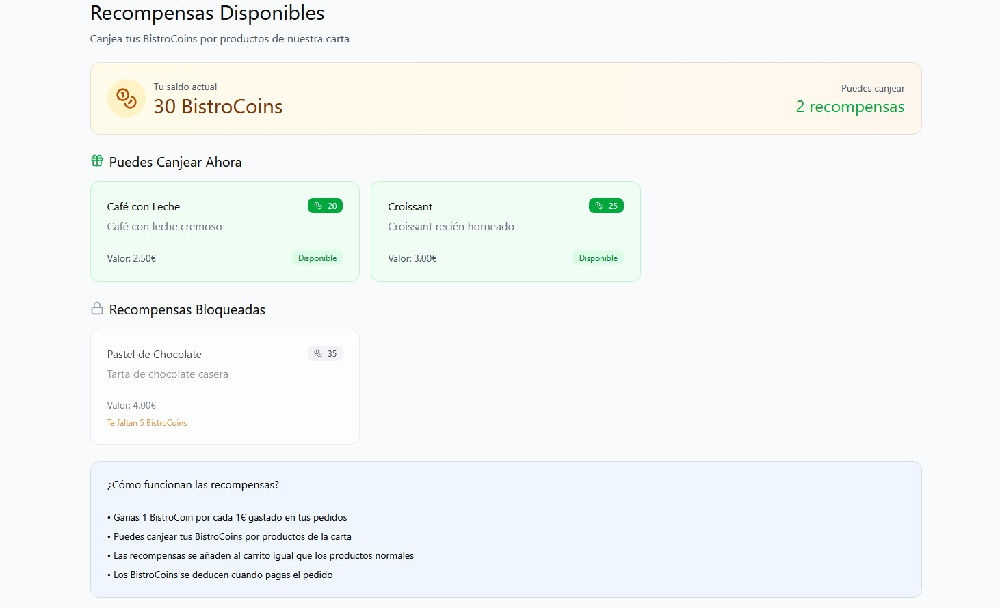

En esta página se presenta el diseño visual y el flujo de navegación de la aplicación Bistro FDI mediante capturas de los prototipos realizados.
1. Gestión de Usuarios y Acceso
El flujo comienza con el acceso del usuario o el registro de nuevos clientes.
Registro de Clientes y Login
Desde la página principal, un usuario nuevo puede registrarse. Una vez registrado, accede mediante el formulario de login.
Perfil y Administración de Usuarios
El usuario puede gestionar sus datos en "Mi Perfil". El administrador tiene acceso a una tabla general para gestionar roles y permisos.
2. Gestión de Productos (Vista del Gerente)
El gerente utiliza estas pantallas para mantener actualizada la carta del restaurante.
Categorías

Permite organizar los productos para facilitar la navegación del cliente.
Productos
Vistas para crear, editar y visualizar el inventario disponible.
Navegación y Filtrado
Describe cómo el usuario interactúa con la carta para encontrar lo que desea consumir.
3. Gestión de Pedidos
Esta funcionalidad permite a los clientes realizar pedidos y a los camareros gestionar el cobro y la entrega de estos.
Selección de Tipo de Pedido y Catálogo
El cliente selecciona primero si el pedido es para consumir en el local o para llevar. Después, navega por el catálogo para añadir productos al carrito.
Carrito de Compra y Proceso de Pago

En el carrito se pueden modificar las cantidades o cancelar el pedido. En la pantalla de pago se elige entre tarjeta de crédito o pago directo al camarero.
Confirmación e Historial de Pedidos
Una vez confirmado, el sistema asigna un número de pedido único. El cliente puede seguir el estado de su pedido desde su historial personal.
Gestión para Camareros
Los camareros visualizan los pedidos listos para cobrar, preparar o entregar y pueden cambiar el estado del pedido confirmando su terminación, su entrega o su pago.
4. Programa de Fidelización y Recompensas
Los clientes acumulan BistroCoins con sus compras que pueden canjear por productos de la carta.
Administración de Recompensas (Gerente)



El gerente puede dar de alta nuevos productos como recompensas, asignarles un valor en BistroCoins y editar los existentes.
Catálogo de Recompensas (Cliente)

Los clientes pueden visualizar las recompensas disponibles y añadirlas a su pedido si disponen de saldo suficiente de BistroCoins en su perfil.
Nota: Estos bocetos representan la base visual para el desarrollo de las siguientes prácticas.


.png)